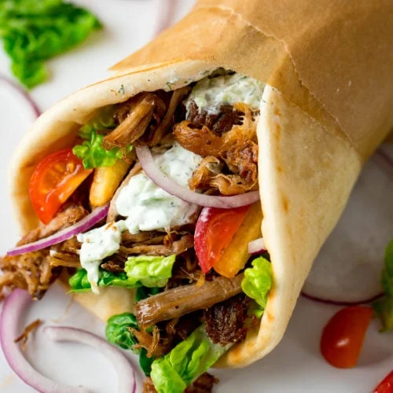

Traditional Gyros

Description
Traditional gyros is a beloved Greek street food that has gained popularity
worldwide. This savory dish features meat cooked on a vertical rotisserie,
typically pork or chicken in Greece, though beef and lamb are common in
other countries.
The meat is seasoned with a blend of herbs and spices, including oregano, thyme,
and rosemary, then stacked in the shape of an inverted cone on a tall spit.
As it rotates slowly in front on the heat source, the outer layer crisps up,
while the interior remains juicy and tender.
Ingredients
- 1 small onion, cut into chunks
- 1 pound ground lamb
- 1 pound ground beef
- 1 tablespoon minced garlic
- 1 teaspoon dried oregano
- 1 teaspoon ground cumin
- 1 teaspoon dried marjoram
- 1 teaspoon dried thyme
- 1 teaspoon dried rosemary
- 1 teaspoon freshly ground black pepper
- 1/4 teaspoon sea salt
- 12 tablespoons hummus
- 12 pita bread rounds
- 1 small head lettuce, shredded
- 1 large tomato, sliced
- 1 large red onion, sliced
- 6 ounces crumbled feta cheese
- 24 tablespoons tzatziki sauce
Steps
- Place onion in a food processor and finely chop. Transfer onion to a piece of cheesecloth and squeeze out the liquid. Place onion in a large bowl.
- Mix lamb, beef, garlic, oregano, cumin, marjoram, thyme, rosemary, black pepper, and salt with the onion using your hands until well mixed. Cover bowl with plastic wrap and refrigerate until flavors blend, about 2 hours.
- Preheat the oven to 325 degrees F (165 degrees C).
- Place meat mixture in a food processor and pulse until finely chopped and tacky, about 1 minute. Pack meat mixture into a 7x4-inch loaf pan, ensuring there are no air pockets. Place the loaf pan into a roasting pan and pour enough boiling water around the loaf pan to reach halfway up the sides for a water bath.
- Bake in the preheated oven until no longer pink in the center, 45 to 60 minutes. An instant-read thermometer inserted into the center should read at least 165 degrees F (74 degrees C). Pour off any accumulated fat and cool slightly.
- Thinly slice the cooked gyro meat loaf.
- Spread 1 tablespoon hummus onto each pita bread. Then top each with some of the gyro meat slices, shredded lettuce, tomato slices, red onion slices, feta cheese crumbles, and 2 tablespoons tzatziki sauce to complete each sandwich.